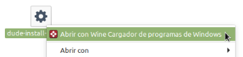
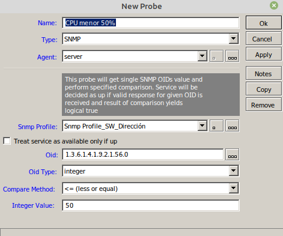
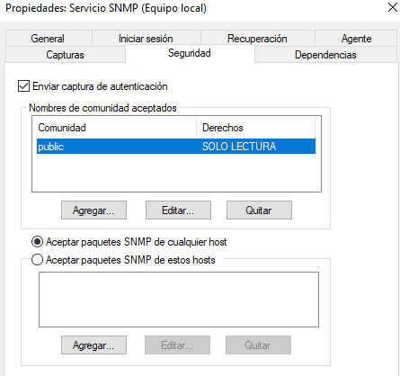

5.2 Monitorización con Dude
1. Introducción
Dentro de los sistemas de monitorización de redes y servidores, se encuentran los del tipo SNMP donde:
- SNMPv1: Implementación básica, solo se autentifica con la comunidad.
- SNMPv2: Implementación media: acepta conexiones del tipo manager to manager.
- SNMPv3: Implementación avanzada: presenta mejor seguridad y encriptación y autentificación MD5 o SHA y DES respectivamente.
En este capítulo, hablaremos de la monitorización mediante snmp en sistemas en red con un equipo Mikrotik y su herramienta de monitorización Dude.
2. Escenario
Para este capítulo, el escenario de monitorización es una red de un centro educativo con equipamiento mikrotik y switch cisco.
3. Dude integrado en Mikrotik
Para la monitorización de redes donde se tienen equipo mikrotik, hay que instalar dude server y dude cliente y posteriormente, hay que activar en dude los equipos y servicios a monitorizar.
En primer lugar, hay que descargar los paquetes de mikrotik y descargar la versión del mikrotik (7.8 Abril-2023) (all-packets.zip).
Una vez se tiene el fichero, hay que descomprimirlo y coger el paquete de dude-7.8.npk y cargarlo en la raíz del equipo mikrotik.
A continuación, reiniciamos el mikrotik y éste instalará el paquete nuevo. Se comprueba con dude print.
Del centro downloads de mikrotik (download archive) bajamos el dude cliente de la versión 7.8 (dude-install-7.8.exe --> hacerlo en wine) para monitorizar el servidor dude que acabamos de instalar en mikrotik.
Instalamos el fichero desde el equipo Linux mediante la opción: abrir con Wine.

Una vez instalado, ya se podrá acceder a Dude.
Nos conectamos al servidor dude (ip del mikrotik ether1).
Si accedemos a dude, tenemos un árbol con todas las posibilidades, se describen en la siguiente figura.

En el siguiente vídeo, se describe el proceso de instalación del cliente dude y primeros pasos de configuración para la monitorización.
Vídeo 1. Instalación de cliente dude.
4. Añadir dispositivos
4.1 Añadir Switch y Router
Una vez se está en el panel principal, para añadir un dispositivo hay que darle la ip ya que es un sistema de monitorización de capa 3. Ejemplo, se añade el switch Cisco de Dirección que tiene asignada la ip 192.168.100.103 (red de gestión). NO hay que Seleccionar Secure Mode y Router OS, ya que es un Cisco y no es un mikrotik.
Se añade el servicio ping a monitorizar y como ejemplo, se establecen estos umbrales:
A continuación, se añade como fondo el plano del centro educativo para ir incorporando los dispositivos en la ubicación física donde se encuentran. Para añadir el fondo (no hacer click en Title para que no repita la imagen), hay que subir las imágenes/planos en el directorio dude/images en mikrotik. Quedaría así:
Figura . Fichero con el plano subido.
Figura . Fichero con el plano posicionado.
Se pueden hacer botones que acceden a otros mapas (ejemplo pisos superiores/inferiores u otros bloques). Para ello hay que añadir un submapa accediendo al menú Add → Submap.
Para añadir el propio equipo mikrotik en dude, hay que pulsar Add Device y luego, seleccionar Secure Mode y Router OS, para identificar que ese equipo es un mikrotik.
A continuación, hay que añadir un enlace para conectar el mikrotik con los diferentes switches. Para ello, como ejemplo se pulsa Add Link para unir el mikrotik con el switch Cisco de Dirección (Device Mikrotik principal, Interface ether2 de dirección a switch).
4.2 Añadir enlace para monitorizar internet
Para este caso se configura la monitorización del tráfico que va hacia internet, y para ello hay que acceder a Add Network --> y seleccionamos (ether1) ya que es la interfaz de acceso a internet.
Una vez añadida la red, hay que hacer un link con el Mikrotik, para ello, hay que acceder a AddLink con el mikrotik (ether1) y la red internet.
4.3. Añadir a Gns3 una máquina de virtualbox, vmware o Kvm para monitorizar en Dude
Si se quiere añadir una MV VmWare, primero hay que instalar lalibrería open-vm-tools en el equipo donde se tienen las MV de Vmware:
jc@jc-Latitude-E6430:~$ ip service disable 3
A continuación, hay que configurar en gns3 el path to run vmrun, para ello, hay que acceder a Edit Preferences --> VMWare.
Otra opción es añadir una máquina KVM Qemu que se tenga en el equipo anfitrión dentro de las subred 192.168.122.0. Por ejemplo, en este caso se tiene una MV Ubuntu Server en KVM con ip 192.168.122.97.
Y como se quiere monitorizar el ping a ese equipo, se añade el servicio ping.
A continuación, creamos el enlace del mikrotik (ether1) al ubuntu server.
Asignar ip estáticas a los equipos que se van a monitorizar, o en el dhcp asignar la misma ip por MAC. Para ello, hay que acceder al dhcp server de mikrotik, y pulsar el botón derecho para poner make static ip, y dejará esa ip siempre para esa MAC.
En la figura superior, para este caso, se establece la dirección que ha obtenido el equipo kali que está conectado en la red de dirección de manera estática.
Según se ha establecido el link, quedará ? ya que al seleccionar snmp y no tener instalado el mismo en el servidor ubuntu, no se puede establecer la interfaz. Si el servidor ubuntu está conectado a un switch cisco, hay que configurar un cliente de snmp en el mismo y después, hay que decirle a dude que para ese switch se utilizará el cliente snmp configurado. Para ello se accede por consola al switch y se siguen los siguientes pasos:
1. Crear una Vista SNMP
#snmp-server view Vista_RO_SNMP iso included
Con el comando anterior, se crea una vista con nombre Vista_RO_SNMP y se incluye en standard iso.
2. Sobre la vista creada, hay que crear un grupo de solo lectura. (la idea es que nadie pueda cambiar cualquier configuración del dispositivo).
#snmp-server group Grupo_SNMP v3 priv read Vista_RO_SNMP
donde,
- Versión 3 para crear 2 contraseñas, una para autenticación y otra para cifrado de la información entre dispositivos.
- Read de solo lectura.
- Al final, se pone el nombre de la vista donde se quiere crear el grupo.
3. Crear un usuario dentro del grupo
#snmp-server user UsuarioBastionado Grupo_SNMP v3 auth sha Caminas-100 priv aes 128 passCifrado
donde,
- Versión 3, para la autenticación, la contraseña se cifra en sha.
- Caminas-100 es la contraseña. Nos conectaremos en aes 128 (para cifrar) y passCifrado es la contraseña para cifrar la comunicación.
Para finalizar hacemos copy running-config startup-config.
Esta configuración (usuario y contraseñas) por seguridad, no aparece al hacer show running-config.
4. Crear perfil snmp del switch en Dude
A continuación, hay que crear un perfil de snmp del switch cisco en dude.
Pulsar en ... y luego en + y rellenar según los datos configurados en el switch cisco.
Una vez se pulsa Apply y Ok, ya se puede seleccionar el perfil en el combo de selección.
5. Comprobar configuración
Para comprobar que la configuración es correcta, hay que pulsar con el botón derecho sobre el dispositivo y elegir la opción de menú Tools → SnmpWalk.
SnmpWalk lo que hace es, ir al dispositivo y le dice, dime cuales son las variables, es decir, todos sus oids.
6. Parámetros a monitorizar
A continuación, hay que indicar qué parámetros se desean monitorizar. Por ejemplo, si se crea un enlace y se selecciona snmp, ya permite que se pueda establecer sobre qué interfaz del switch se quiere monitorizar.

Para este caso, se añade un link del switch cisco a un equipo kali que está en la interfaz Gi1/1 en Dirección. En las imágenes inferiores, se puede observar el equipo y el enlace a monitorizar.
Con este enlace solo se pueden monitorizar links, para monitorizar métricas en equipos ya sea el kali de dirección, ubuntu server conectado a la subred 192.168.122.0, etcétera, hay que instalar el cliente snmp en los equipos finales.
Se pueden indicar oids para que aparezcan en la leyenda del enlace. En este caso, solo aparece el tráfico RX y TX.
Para ello, sobre el enlace pulsamos botón derecho y seleccionamos Apperance.
En Label se indica lo que se quiere que aparezca en la leyenda.
Esto mismo se puede hacer sobre un dispositivo, ejemplo, si con el botón derecho del ratón pulsamos en el Switch Cisco, aparece lo siguiente:

Para introducir los oid que consultan la cpu, hay que buscar en internet:
OIDs Comunes Cisco
Ejemplo CPU 5s: iso.org.dod.internet.private.enterprises.cisco.local.1.56.0
Para monitorizar la CPU los últimos 5 minutos y 5 segundos, hay que poner:
[Device.Name]
[device_performance()][Device.ServicesDown]
CPU:[oid("1.3.6.1.4.1.9.2.1.58.0")]% → CPU de los últimos 5 minutos.
CPU 5s:[oid("1.3.6.1.4.1.9.2.1.56.0")]% → CPU de los últimos 5 segundos.
Fuente → https://oidref.com/1.3.6.1.4.1.9.2.1.58
Al pulsar Apply y Ok, ya muestra la monitorización:
En el siguiente vídeo, se describe el proceso de cómo configurar vista, grupo y usuario SNMP en Switch Cisco.
Vídeo 2. Configurar vista, grupo y usuario SNMP en Switch Cisco.
4.4 Coger la información snmp de ubuntu sever en KVM
Ahora nos conectamos a ubuntu server para coger la información de snmp.
Para monitorizar con snmp en ubuntu server, hay que instalar el cliente snmp en el equipo, modificar un parámetro del fichero de configuración y crear un usuario snmp. Los pasos son los siguientes:
1. Instalamos las librerías necesarias
root@orion:/#apt-get install snmp snmpd libsnmp-dev
2. Configurar snmpd
root@orion:/#service snmpd stop
root@orion:/#nano /etc/snmp/snmpd.conf
Hay que modificar la línea agentaddress 127.0.0.1 por → agentaddress 0.0.0.0 Para que escuche por todo, no solo por la interfaz de lookback.
También se puede poner esto: agentAddress udp:161,udp6:[::1]:161 → más conveniente porque se restringe por puerto 161 udp.
3. Crear el usuario SNMP v3
root@orion:/#service snmpd stop
root@orion:/#net-snmp-create-v3-user -ro -A Caminas-100 -a SHA -X passCifrado -x AES UsuarioBastionado
root@orion:/#service snmpd start
4. Comprobación
root@orion:/#service snmpd status
Se comprueba que se está a la escucha por el puerto 161.
root@orion:/#netstat -an | grep 161
Si se tiene el firewall habilitado, hay que crear una regla:
root@orion:/#ufw allow from 192.168.122.0/24 to any port 161 proto udp
root@orion:/#ufw reload
Para probar snmp con el usuario y credenciales creado, el comando es el siguiente:
#snmpget -u UsuariBastionat -l authPriv -a Sha -x Aes -A temp_password -X temp_password agent_server_ip_address 1.3.6.1.2.1.1.1.0
root@orion:/#nmpget -u UsuarioBastionado -l authPriv -a Sha -x Aes -A Caminas-100 -X passCifrado 192.168.122.97 1.3.6.1.2.1.1.1.0
dónde como ejemplo, se le pasa el oid para obtener el uname -a: 1.3.6.1.2.1.1.1.0.
Como se observa en la figura superior, el comando devuelve la consulta del oid que equivale a uname -a.
A continuación, se pulsa doble click sobre el dispositivo UbuntuServer y se crea un perfil como se realizó anteriormente para el switch cisco.
Una vez definido el perfil, ya se podrían introducir métricas para la monitorización igual que se hizo en el switch cisco. Desde la terminal de ubuntu, también se pueden hacer consultas, ejemplo:
root@orion:/#snmpwalk -v 1 -c public orion .1.3.6.1.2.1.1.3.0

Si se accede a snmpwalks, podremos comprobar los oids susceptibles a usar.
Por defecto, nos aparecen métricas de cpu, memoria física y virtual y disco.
Añadimos los siguientes oids para comprobar el uptime y el número de procesos:
[Device.Name]
[device_performance()][Device.ServicesDown]
No procesos: [oid("1.3.6.1.2.1.25.1.6.0")]
uptime: [oid("1.3.6.1.2.1.1.3.0")]
Fuente:
- http://www.linux-admins.net/2012/02/linux-snmp-oids-for-cpumemory-and-disk.html
- https://oidref.com/1.3.6.1.2.1.25.1.6
El del nº de procesos: iso.org.dod.internet.mgmt.mib-2.host.hrSystem.hrSystemProcesses.0
5. Vídeo descriptivo de todo el proceso
En el siguiente vídeo, se describe el mapa de monitorización en Dude par el escenario de la Red de Aulas.
Vídeo 3. Mapa de monitorización en Dude - Red de Aulas.
5. Enviar alarma a Telegram
5.1 Crear bot y grupo en Telegram
En primer lugar hay que crear un grupo Telegram para enviar al mismo las alarmas que se vayan produciendo. Para crear un grupo en Telegram, se necesitan 2 o más usuarios, por lo que necesitamos crear un Bot para poder crear un Grupo en Telegram con el Bot y nosotros. En el proceso de creación del bot, hay que guardar el token que se genera ya que será necesario para realizar el descubrimiento del id del chat y enviar mensajes.
En el siguiente vídeo, se describe el proceso de creación del grupo, bot y obtención de id del chat.
Vídeo 4. Crear bot en grupo de Telegram.
Para obtener el id del chat del grupo mío y del boot:
NOTA: Si se creó el nuevo grupo con el bot y solo se obtiene {"ok":true,"result":[]}, eliminar y agregar el bot nuevamente al grupo.
Para este caso, el Id del chat es: -679163606
Para hacer una prueba de envío, desde la consola del equipo ubuntu server hacemos:
root@orion:/#curl -X POST -H 'Content-Type: application/json' -d '{"chat_id": "-679163606", "text": "Esto es una prueba desde CURL"}'
Donde hay que indicar el id del chat y el token del bot.
Fuente:
Referencias
- https://www.adslzone.net/como-se-hace/telegram/crear-bot/
- https://wiki.mikrotik.com/wiki/Manual:The_Dude_v6/Dude_Telegram_Example
5.2 Crear notificaciones en Dude para enviar a Telegram
Para crear la notificación en dude hay que acceder a → Notifications y añadir una nueva +. En type poner → execute in server. En Insert variable se pone:
/tool fetch
url="https://api.telegram.org/bot5541386839:AAGJKIBc3xCOudRGVnQjgR9uE9mF
H-RYb6Y/sendMessage\?chat_id=-679163606&text=Service
[Device.Name] is now [Service.Status] [Probe.Name] on ([Service.ProblemDescription])" keep-result=no
Donde hay que indicar el id del chat (679163606) y el token del bot (5541386839:AAGJKIBc3xCOudRGVnQjgR9uE9mF)
A continuación, hay que ir al servicio ping del switch por ejemplo y asociar esta notificación. De esa forma, cuando el ping falla enviará el mensaje.

Una vez se produce el problema, se recibe en el grupo.
5.3 Configurar un ‘Probes’ en dude server
Como ejemplo, se va a configurar un 'Probes' en dude server para notificar cuando el Switch Cisco de Dirección supere un umbral determinado, ejemplo: enviar alarma cuando el % de cpu supere el 50%.
Para ello, hay que pulsar + para crear una nueva con estos datos, donde se desea que esté en verde cuando la cpu es menor o igual al 50%.

donde,
- oid: 1.3.6.1.4.1.9.2.1.56.0
- oid type. integer.
- Type: SNMP
- Profile: Perfil del switch de cisco de dirección.
A continuación, hay que ir al dispositivo en el mapa y añadir un nuevo servicio donde hay que poner en Probe, CPU menor 50% (el que se acaba de crear).
En la pestaña de notificaciones, se le configura que notifique por Telegram. De esta forma, cuando supere el 50%, enviará un mensaje.
5.4 Pruebas
Para probar todo lo configurado, se hace un ataque DoS desde el equipo kali conectado al switch de Dirección. De esta forma, mediante peticiones se inundará el puerto 23 que tiene abierto el puerto cisco (telnet).
#hping3 -S –flood -V -p 23 192.168.100.1003
Al realizar el ataque, en el mapa podemos observar que el switch cambia de color al rojo ya que ha superado el umbral establecido.

Si accedemos a Telegram, observamos los mensajes avisando del umbral superado.
En el siguiente vídeo, se describe el proceso para el envío de aviso de alarmas a Telegram por unmbral de CPU en Switch de Cisco.
Vídeo 5. Envío de alarma a Telegram por unmbral de CPU en Switch de Cisco.
Fuente:
6. Configuración SNMP Windows Server 2019
Windows Server permite las versiones snmp 1 y 2 (inseguras), no permite la 3 (cifrado de tráfico y credenciales).
Para nuestro escenario, la ip del servidor es la siguiente:
Pasamos a describir el proceso de instalación de snmp.
1. Instalar la característica snmp
2. Ir a Servicios y buscar SNMP
Configuramos el perfil v2-public, y le damos otro nombre de comunidad → public (comunidad standar para LReadOnly). En Windows se configura la comunidad public SOLO LECTURA.
3. Configurar comunidad
En Windows se configura la comunidad public SOLO LECTURA.

4. Crear alerta
Si supera un % CPU avisa En Probes, para ello hay que acceder a New Probe y rellenamos los datos según la figura.
5. Obtener datos por snmp
Para obtener datos por snmp, se configura :
| [Device.Name] [device_performance()][Device.ServicesDown] No procesos: [oid("1.3.6.1.2.1.25.1.6.0")] |
oids Windows: https://www.10-strike.com/network-monitor/help/monitoring/snmp-monitoring.shtml
- 1.3.6.1.2.1.1.1.0 to get system description
- 1.3.6.1.2.1.25.1.6. to get number of processes
- Uptime: [oid("1.3.6.1.2.1.25.1.1.0")]
- 1.3.6.1.2.1.25.1.6.0 - number of running processes
- .1.3.6.1.2.1.25.2.2.0 - total RAM size
Referencias
- https://docs.microsoft.com/en-us/windows-hardware/customize/desktop/unatend/microsoft-windows-snmp-agent-service
- https://mivilisnet.wordpress.com/2017/04/08/dude-what-happens-to-my-windows-server/
- https://www.sysadmit.com/2017/08/prtg-SNMP-windows-server.html
7. Referencias
Obra publicada con Licencia Creative Commons Reconocimiento No comercial Compartir igual 4.0